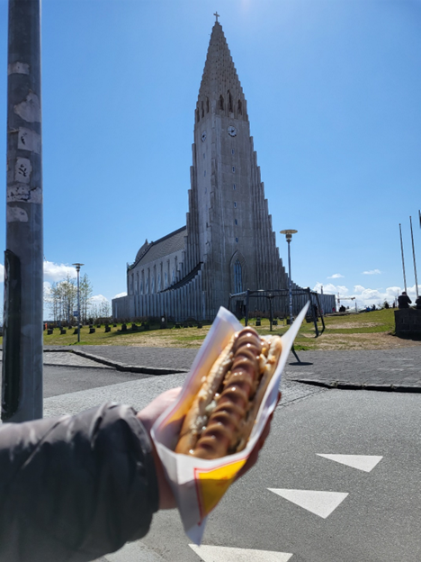
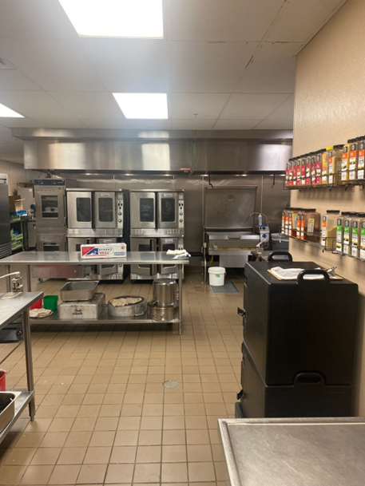
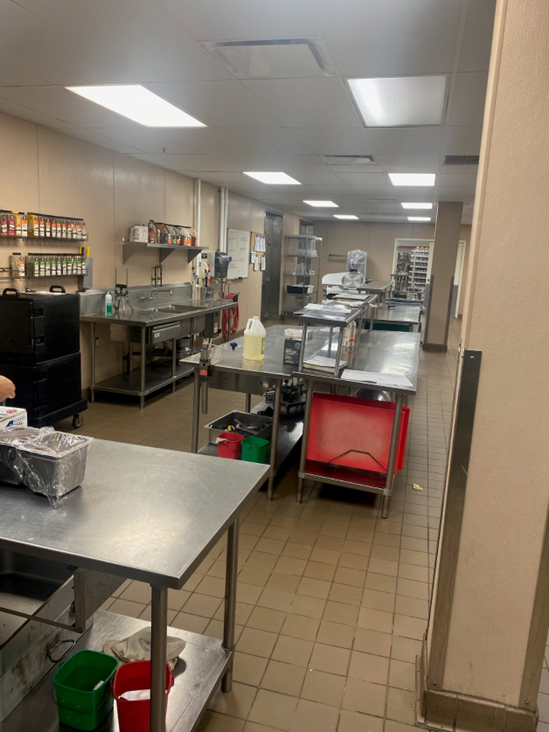
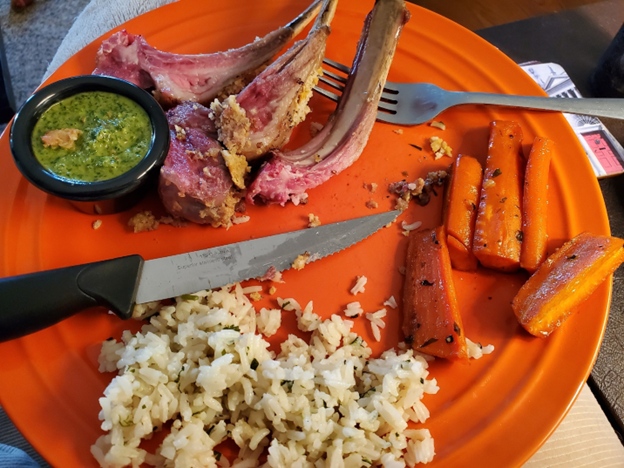

This is an image from a trip that Jake took to Iceland. It is the Hallgrímskirkja church that is found in the center of the capital city of Reykjavík. Apparently, they are famous for hot dogs. They use a special kind of mustard that tastes kind of sweet, along with crispy dried onions.


These are some pictures Jacob me of the kitchen he is currently working in at the retirement facility.

Jake says this was his first attempt at making lamb. He tried it out at home with his wife, and he feels it turned out pretty good. He like to try recipes at home first if he is cooking something he isn't super familiar with.